철도신호산업기사 (2002-08-11 기출문제)
1과목: 전자공학
1. 그림과 같은 연산증폭기의 전압증폭도 Av는? (단, R1>=5[kΩ], R2=75[kΩ]이다.)
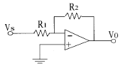
- +15
- -15
- +16
- -16
(정답률: 알수없음)

2. 회로에서 연산 차동증폭기의 출력전압은 몇 V 인가?(단, R1=1kΩ, R2=100kΩ, R3=1kΩ, R4=100kΩ, V1=10.5V, V2=10V이다.)
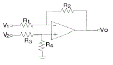
- 20
- 30
- 40
- 50
(정답률: 알수없음)
3. 바리스터를 옳게 설명한 것은?
- 저항값이 전압에 따라 변하는 소자
- 저항값이 온도에 따라 크게 변하는 소자
- 전류변화에 따라서만 저항값이 변하는 소자
- 온도에 따라 전압을 변화시키는 결정적인 소자
(정답률: 알수없음)
4. 그림과 같은 논리 맵을 간단히 표시한 것은?
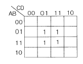
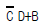
- BD
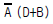
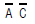
(정답률: 알수없음)
5. 디코더(decoder)에 대한 설명으로 옳은 것은?
- 코드화된 데이타로부터 정보를 찾아내는 조합논리 회로이다.
- 하나의 선으로부터 정보를 받아 이 정보를 2n개의 출력선 중 어느 하나에 실어주는 회로이다.
- 여러 개의 입력선 중에서 어느 하나를 선택하여 출력선에 실어준다.
- 2n개 또는 그 이하의 입력수를 가지며 n개의 출력선을 갖는다.
(정답률: 알수없음)
6. 도체에 전기장을 가하지 않더라도 캐리어의 밀도 차이에 의해서 흐르는 전류는?
- 드리프트(drift) 전류
- 음전류
- 양전류
- 확산(diffusion) 전류
(정답률: 알수없음)
7. 과변조한 전파를 수신하면 어떤 현상이 발생되는가?
- 음성파 전력이 커진다.
- 음성파 전력이 작아진다.
- 음성파가 일그러진다.
- 검파기가 과부하 된다.
(정답률: 알수없음)
8. 그림과 같은 회로의 입력임피던스는 몇 kΩ 인가?(단, hie=3kΩ, hfe=50 이다.)
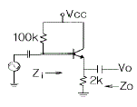
- 3.45
- 4.76
- 5.32
- 6.90
(정답률: 알수없음)
9. 압전현상을 이용한 발진기는?
- 윈브리지발진기
- 수정발진기
- 이상발진기
- 하틀레이발진기
(정답률: 알수없음)
10. 진폭 찌그러짐이 생기는 이유는?
- 트랜지스터 또는 FET의 내부 용량에 의해 발생된다.
- 회로의 리액턴스분에 의해 발생된다.
- 회로가 리액턴스이기 때문에 발생한다.
- 능동소자의 동특성 곡선의 비직선성에 의해 발생된다.
(정답률: 알수없음)
11. 트랜지스터의 스위칭시간에서 turn-on 시간은?
- 하강시간
- 상승시간+지연시간
- 상승시간
- 하강시간+지연시간
(정답률: 알수없음)
12. 평형 변조회로의 목적은?
- 변조도를 크게 하기 위하여
- 변조 전력을 줄이기 위하여
- 변조 효율을 높이기 위하여
- SSB파를 얻기 위하여
(정답률: 알수없음)
13. 그림과 같은 회로가 발진하기 위한 조건은?
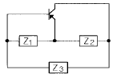
- Z1: 유도성, Z2: 용량성, Z3: 유도성
- Z1: 유도성, Z2: 용량성, Z3: 용량성
- Z1: 용량성, Z2: 유도성, Z3: 용량성
- Z1: 용량성, Z2: 용량성, Z3: 유도성
(정답률: 알수없음)
14. 차동증폭기에 대한 설명 중 틀린 것은?
- 연산증폭기 입력측에 주로 사용된다.
- 두 입력의 차에 해당하는 신호를 증폭한다.
- 차동증폭기의 성능은 동상 제거비의 크기에 따라 결정된다.
- 이상적인 차동증폭기는 동상신호 제거비가 0 인 경우이다.
(정답률: 알수없음)
15. 다이오드의 특성에 관한 그림에서 맞게 짝지어진 것은?
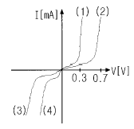
- (1)=Si (2)=Ge (3)=Ge (4)=Si
- (1)=Si (2)=Ge (3)=Si (4)=Ge
- (1)=Ge (2)=Si (3)=Si (4)=Ge
- (1)=Ge (2)=Si (3)=Ge (4)=Si
(정답률: 알수없음)
16. 그림과 같은 정류회로도에서 PＩV(최대 역전압)는?
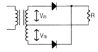
- 0.5Vm
- Vm
- 2Vm
- 4Vm
(정답률: 알수없음)
17. ＪK 플립플롭의 특성식은?
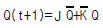
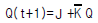
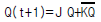
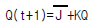
(정답률: 알수없음)
18. 베이스 공통 트랜지스터 회로에서 입력신호전압과 출력 신호전압 사이의 위상은 어떻게 되는가?
- 90° 위상차가 있다.
- 180° 위상차가 있다.
- 270° 위상차가 있다.
- 위상차가 없다.
(정답률: 알수없음)
19. 순방향 블로킹 영역에서 SCR은 어떠한 상태에 있는가?
- 역방향 바이어스
- 오프상태
- 온 상태
- 항복위치
(정답률: 알수없음)
20. 주파수 변조에서 S/N 비를 높이기 위한 방법이 아닌것은?
- 대역폭을 넓힌다.
- 변조도를 크게 한다.
- 수신측에 pre-emphasis 회로를 삽입한다.
- 최대 주파수 편이는 변조지수에 비례한다.
(정답률: 알수없음)
2과목: 신호기기
21. 전기자의 주된 역할은?
- 기전력유도
- 자속의 생성
- 정류작용
- 회전체와 외부회로접속
(정답률: 알수없음)
22. 삽입형 자기유지계전기의 접점수,정격전압,전류에 대한 사항중 옳은 것은?
- NR4/N4R4, 120mA, 24V
- NR4/N4R4, 80mA, 22V
- NR4/N2R2, 120mA, 22V
- NR4/N2R2, 80mA, 24V
(정답률: 알수없음)
23. 3상 유도전동기에서 비례 추이가 되지 않는 것은?
- 저항
- 출력
- 역율
- 효율
(정답률: 알수없음)
24. 교류전기 전철기의 전동기로 유입하는 대전류를 제어하기 위하여 설치된 것은?
- 전기정자
- 전철제어계전기
- 전동기
- 회로제어기
(정답률: 알수없음)
25. 기기의 단자전압과 전류는 특별히 정하는 것을 제외하고는 정격값의 몇[%]이내로 유지하여야 하는가?
- ± 20
- ± 30
- ± 40
- ± 50
(정답률: 알수없음)
26. 변압기의 내부고장 보호계전기로 가장 적당한 것은?
- 과전류 계전기
- 단락 계전기
- 차동 계전기
- 지락 계전기
(정답률: 알수없음)
27. 농형 유도 전동기의 기동법이 아닌것은?
- 기동보상기법
- 2차저항법
- 리액터기동법
- Y-△ 기동법
(정답률: 알수없음)
28. 보극이 없는 직류기의 운전 중 중성점의 위치가 변하지 않는 경우는?
- 과부하
- 중부하
- 전부하
- 무부하
(정답률: 알수없음)
29. 교류 NS형 전철기의 동작시분은?
- 4초
- 6초
- 8초
- 10초
(정답률: 알수없음)
30. 전기전철기의 슬립(Slip)전류가 약할때 발생되는 장애 종류로서 맞는 것은?
- 전동기 소손
- 전철기 불일치
- 치차절손
- 휴즈단선
(정답률: 알수없음)
31. 전기전철기의 전환을 직접 제어하는 계전기는?
- WLR
- TR
- NR
- WR
(정답률: 알수없음)
32. 전동차단기에 대한 설명 중 옳지 않은 것은?
- 활전류는 6A 이하
- 기동전류는 4.5A 이하
- 운전전류는 3.6A 이하
- 평균운전전류는 2.5A 이하
(정답률: 알수없음)
33. 10[KVA]의 단상변압기의 퍼센트저항 강하가 2.5[%], 퍼센트 리액턴스 강하가 1.8[%]이다. 퍼센트 임피던스 강하는?
- 3.08[%]
- 4.08[%]
- 5.08[%]
- 6.08[%]
(정답률: 알수없음)
34. 1차 권수 3000회, 2차 권수가 100인 변압기의 전압비를 구하고 1차에 2850[V]를 가할 때의 2차 전압[V]은?
- 30
- 95
- 209
- 418
(정답률: 알수없음)
35. 건널목제어자 201형의 특성 설명이다. 옳지 않은 것은?
- 제어구간 길이는10-15m
- 폐전로식이다.
- 발진주파수는 20KHz
- 경보시점에 설치
(정답률: 알수없음)
36. 다음중 진로 선별회로에서 동작하지 않는 계전기는?
- CR
- RR
- NR
- HR
(정답률: 알수없음)
37. 전차선 절연구간 예고지상 장치 에서 송신기와 지상자의 간격은 최고 몇[m]이내 인가?
- 10
- 20
- 30
- 40
(정답률: 알수없음)
38. 3상 유도 전동기의 2차 저항을 2배 하면 2배로 되는 것은?
- 역률
- 슬립
- 토크
- 전류
(정답률: 알수없음)
39. 궤도계전기가 갖추어야 할 조건이 아닌 것은?
- 소비전력이 적어야 한다.
- 동작이 확실해야 한다.
- 동작전류가 커야 한다.
- 제어구간이 길어야 한다.
(정답률: 알수없음)
40. 진로선별 계전기의 설치 위치는?
- 반위배향
- 정위배향
- 정위대향
- 반위대향
(정답률: 알수없음)
3과목: 신호공학
41. 신호현시의 필요조건이 아닌 것은?
- 고장일 때에는 안전쪽이 아니라도 좋다.
- 현시가 간단하고, 충분한 확인거리를 가져야 한다.
- 같은 뜻의 신호는 가능한 같은 현시이어야 한다.
- 관계 기기와 연동이 되어 있어야 한다.
(정답률: 알수없음)
42. 출발신호기에 종속되어 그 외방(주로 장내신호기의 하위)에 설치하여 주체 신호기의 신호현시를 예고하는 신호기는?
- 통과신호기
- 신호부속기
- 원방신호기
- 중계신호기
(정답률: 알수없음)
43. 전기쇄정기 조사접점의 주된 역할은?
- 선로전환기 쇄정 확인조건
- 철사쇄정 조건
- 선로전환기 제어조건
- 신호현시 확인조건
(정답률: 알수없음)
44. 상치신호기의 종류로 옳은 것은?
- 주신호기, 임시신호기, 특수신호기
- 주신호기, 수신호기, 임시신호기
- 주신호기, 종속신호기, 신호부속기
- 주신호기, 종속신호기, 임시신호기
(정답률: 알수없음)
45. 3위식 신호방식(적,황,녹색)에서 최소 운전시각은 몇 sec 인가?(단, 폐색구간길이 S1=S2=2000m, 열차길이 ℓ =100m, 열차속도 V=80km/h, 신호확인거리 C=60m, 열차가 신호기 1 을 통과하여 신호기 3 이 황색에서 녹색으로 바꾸어지기까지의 시간 t=80sec이다.)
- 267.2
- 275.6
- 296.2
- 298.6
(정답률: 알수없음)
46. 접근쇄정의 해정시분을 설정하였을 때 설정시간이 옳은 것은?
- 장내신호기 85초, 입환신호기 32초
- 장내신호기 90초, 입환표지 34초
- 장내신호기 100초, 출발신호기 30초
- 장내신호기 98초, 입환표지 35초
(정답률: 알수없음)
47. 건널목 전동차단기의 제어계전기(CR1, CR2)의 접점에 해당되는 것은?
- N1 R1
- N2 R2
- N3
- N3 R3
(정답률: 알수없음)
48. 교류 궤도회로의 궤도변압기의 궤도측 전압은 어느 범위의 것이 가장 적합한 것인가?
- 2∼18V
- 24∼48V
- 60∼80V
- 90∼120V
(정답률: 알수없음)
49. 역간 폐색수속이 이루어져야만 출발신호기가 현시되는 폐색방식은?
- 표권
- 쌍신
- 통표
- 연동
(정답률: 알수없음)
50. 복궤조식에 비교할 때 단궤조식은?
- 설비의 신호회로가 복잡하다.
- 보안도가 낮다.
- 비경제적이다.
- 효과가 좋다.
(정답률: 알수없음)
51. CTC장치에서 현장 역의 각종 데이터를 수집해서 중앙으로 정보를 전송해 주는 장치는?
- SSC
- TDE
- CDTS
- LDTS
(정답률: 알수없음)
52. 직류궤도회로에서 저항자 취부 위치는?
- 송전 +측
- 송전 -측
- 착전 +측
- 착전 -측
(정답률: 알수없음)
53. 자동열차정지장치로서 동작이 기계적으로 가능한 것은?
- 타자식
- 마그네트식
- 유도자식
- 고주파 유도식
(정답률: 알수없음)
54. 전기계전 연동장치의 진로조사 회로는?
- 직렬회로
- 병렬회로
- 직.병렬회로
- 망상회로
(정답률: 알수없음)
55. 자동열차정지장치의 연속제어식은?
- 램프식
- 직류 유도자식
- 고주파 변주식
- 상용주파수식
(정답률: 알수없음)
56. 트랜지스터의 이미터 공통 접속 때의 전류증폭률 β가 80일 때 베이스 공통 접속 때의 전류증폭률 α는 얼마인가?
- 0.99
- 1.⑤
- 1.10
- 1.15
(정답률: 알수없음)
57. 전기전철기의 설치방법에 관한 설명으로 옳은 것은?
- 접속간, 밀착조절간과 레일 저면과의 여유거리는 20mm이상으로 한다.
- 밀착검지회로를 부착할 경우 전철제어회로와 직렬로 배선하고, 밀착 불량을 검지하여야 한다.
- 시설측의 궤간 정정후 첨단레일 선단에서 약 300mm의 위치에 케이지대를 설치하고, 절연이 있는 것은 너트가 위에 오도록 되어야 한다.
- 첨단간 롯트의 절연 위치는 동력전철기에서 가까운 레일측이 되도록 하고 텅레일 첨단의 동정에 맞추어 설치한다.
(정답률: 알수없음)
58. 신호케이블의 매설에 관한 설명으로 틀린 것은?
- 특별한 경우 이외에는 지하 60cm 깊이로 매설한다.
- 케이블 매설표를 설치하여야 한다.
- 트라후 뚜껑의 상면과 지표면이 수평이 되어야 한다.
- 케이불의 단말은 테이핑 처리만 하여 둔다.
(정답률: 알수없음)
59. 궤도회로 전원과 궤도사이에 삽입하는 한류장치의 작용 목적과 관계가 없는 것은?
- 궤도 단락에 대한 전류 제한
- 사용 전력량 즉, 소비전력의 감소
- 궤도계전기의 전압의 위상 조정
- 궤도계전기의 수전전압의 조정
(정답률: 알수없음)
60. 졈퍼(Jumper)본드에 대한 설명으로 옳은 것은?
- 귀선저항을 감소시키고 귀선전류의 평형을 유지하기 위하여 설치하는 본드이다.
- 신호전류는 차단하고 귀선전류만을 흘리게 하는 본드이다.
- 레일에 전류의 흐름을 용이하게 하기 위하여 이음매에 설치하는 본드이다.
- 궤도회로의 레일에서 떨어진 동극성의 다른 레일 상호간을 접속하는 본드이다.
(정답률: 알수없음)
4과목: 회로이론
61. 최대눈금이 50[V]인 직류전압계가 있다. 이전압계를 써서 150[V]의 전압을 측정하려면 몇 [Ω]의 저항을 배율기로 사용하여야 되는가? (단, 전압계의 내부저항은 5000[Ω]이다.)
- 1000
- 2500
- 5000
- 10000
(정답률: 알수없음)
62. 리액턴스 2단자 회로망의 임피던스 함수 Z(jω)를 Z(jω)=jX(ω)라 놓을 때
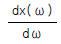
는 어떻게 되는가?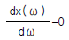
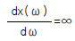
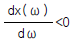
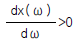
(정답률: 알수없음)
63. R[Ω]인 3개의 저항을 같은 전원에 뽁결선으로 접속시킬 때와 Y결선으로 접속시킬 때 선전류의 크기 비는?
- 1/3
- √6
- √3
- 3
(정답률: 알수없음)
64. 그림과 같은 회로의 전달함수는? (단, ei는 입력, eo는 출력신호이다.)
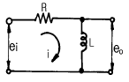
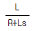
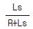
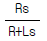
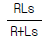
(정답률: 알수없음)
65. 비선형 저항에서 단자전압의 파형과 여기에 흐르는 전류의 파형은 일반적으로 어떠한가?
- 동일하다.
- 전혀 다르다.
- 닮은꼴이 된다.
- 파형은 같으나 위상차가 있다.
(정답률: 알수없음)
66. i = 2t2 + 8t[A]로 표시되는 전류를 도선에 3[sec] 동안 흘렸을 때 통과한 전 전기량은 몇[C]인가?
- 18
- 48
- 54
- 61
(정답률: 알수없음)
67. 전장 중에 단위 정전하를 놓을때 여기에 작용하는 힘과 같은 것은?
- 전하
- 전위
- 전속
- 전장의세기
(정답률: 알수없음)
68. 4단자 정수
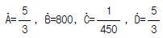
일때 전달정수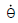
는?- loge 5
- loge 4
- loge 3
- loge 2
(정답률: 알수없음)
69. 저항과 리액턴스의 직렬 회로에 E=14+j38[V]인 교류 전압을 가하니Ｉ=6+j2[A]의 전류가 흐른다.이 회로의 저항과 리액턴스는 얼마인가?
- R = 4 [Ω], XL = 5 [Ω]
- R = 5 [Ω], XL = 4 [Ω]
- R = 6 [Ω], XL = 3 [Ω]
- R = 7 [Ω], XL = 2 [Ω]
(정답률: 알수없음)
70. 3상 불평형 전압에서 역상전압이 10[V], 정상전압이 50[V], 영상전압이 200[V]라고 한다. 전압의 불평형률은 얼마인가?
- 0.1
- 0.⑤
- 0.2
- 0.5
(정답률: 알수없음)
71. 인덕턴스 L=50[mH]의 코일에 Ｉ0 = 200[A]의 직류를 흘려 급히 그림과 같이 용량 C=20[μ F]의 콘덴서에 연결할 때 회로에 생기는 최대전압[KV]는?
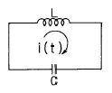
- 10
- 10√2
- 20
- 20√2
(정답률: 알수없음)
72. R1, R2 저항 및 인덕턴스 L의 직렬회로가 있다. 이 회로의 시정수는?
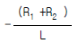
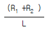
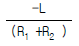
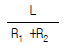
(정답률: 알수없음)
73.
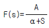
이라 하면 이의 역변환은?- αeAt
- Aeαt
- αe-At
- Ae-αt
(정답률: 알수없음)
74. 뽁결선된 부하를 Y결선으로 바꾸면 소비전력은 어떻게 되겠는가? (단,선간전압은 일정하다)
- 1/3배
- 1/9배
- 3배
- 9배
(정답률: 알수없음)
75. 3상3선식 회로에서
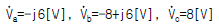
일때 정상분 전압[V]은?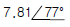
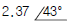
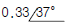
- 0
(정답률: 알수없음)
76. 주기함수의 Fourier 급수에 의한 전개에서 옳게 전개한 f(t)는?
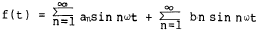
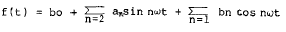
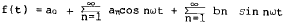
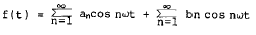
(정답률: 알수없음)
77. 정전용량 C만의 회로에 100[V], 60[Hz]의 교류를 가하니 60[mA]의 전류가 흐른다. C는 얼마인가?
- 5.26[㎌]
- 4.32[㎌]
- 3.59[㎌]
- 1.59[㎌]
(정답률: 알수없음)
78. 비정현파의 이그러짐의 정도를 표시하는 양으로서 왜형률 이란?
- 평균치/실효치
- 실효치/최대치
- 고조파만의 실효치/기본파의 실효치
- 기본파의 실효치/고조파만의 실효치
(정답률: 알수없음)
79. 그림과 같은 회로에서 출력전압ν2의 위상은 입력 전압ν1 보다 어떠한가?
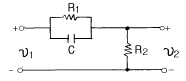
- 뒤진다.
- 앞선다.
- 전압과 관계없다.
- 같다.
(정답률: 알수없음)
80. 그림과 같은 회로에 있어서 스위치 S를 닫을때 1,1' 단자에 발생하는 전압은?
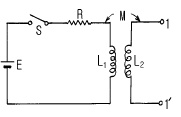
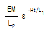
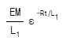
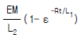
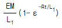
(정답률: 알수없음)